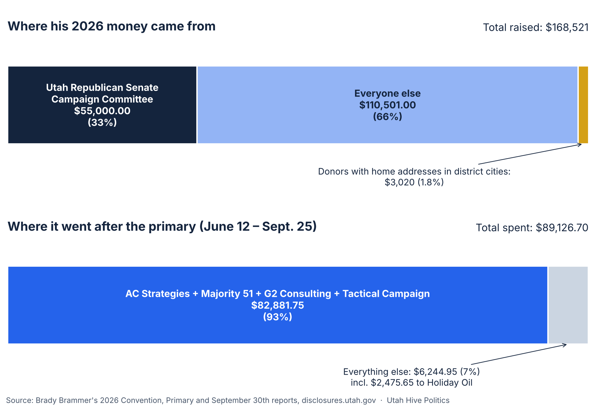

Ballots are in mailboxes for the Nov. 3 general election. Senate District 21 has three candidates: Sen. Brady Brammer (Republican, incumbent), Kandee Myers (Democrat) and Wayne Woodfield (Forward Party).
This piece is about the incumbent's public record: his campaign filings, his conflict-of-interest form, the bills he carried, how he voted, the court docket where he appears as an attorney, and what his campaign says about itself. Every fact below comes from a public record, named next to it. We are not telling anyone who to vote for. We are asking you to look at his track record, and at the two candidates running against him (section 10).
Brammer's full case file, with 18 of his 2026 bills graded, is at weber-county-hive.github.io/utah-senators/brady-brammer.html.
At a glance
- Money: He raised $168,521 in 2026. About a third ($55,000) came from the Utah Republican Senate Campaign Committee. Donors with home addresses in district cities gave about $3,020 (1.8%).
- Spending: After the primary, $82,881.75 of the $89,126.70 he spent (93%) went to four consulting and advertising firms.
- A board seat: His conflict-of-interest form lists him as a board member of Holiday Oil. His campaign paid Holiday Oil $2,475.65 on July 2, listed as "Campaign Expense."
- His bills: The bills we graded B or better each cover a narrow group. The ones graded D or F reach nearly everyone in Utah, including the court-transfer bills used to move the Prop 4 redistricting case.
- His votes: He voted yes on Amendment B, on ending the State Records Committee, and on the public-union law that was later repealed. He was the primary sponsor of the redistricting-standards law a judge blocked in November 2025.
- Court cases: He is the attorney for a company suing the state over groundwater near the Great Salt Lake, and the defense attorney in a federal trade-secrets case in which former Rep. Trevor Lee is also a defendant.
- A campaign claim: He says he "sponsored the bill cutting the gas tax by 15%." The same bill also made refinery data secret and sped up pipeline permits.
Before you vote: is this your district, and when is the deadline?
- Where District 21 is: northern Utah County, covering parts of Alpine, Cedar Hills, Pleasant Grove, Highland, Lehi, American Fork and Lindon. (Salt Lake Tribune, Robert Gehrke, Oct. 12, 2026) Most of those cities are split between districts, so check your own address and ballot at vote.utah.gov.
- Mail ballots must be in the county clerk's hands by 8 p.m. on Election Day, Nov. 3. A postmark no longer counts. Dropping your ballot at a designated drop box or the county clerk's office on or before Election Day avoids mail delays. (Utah News Dispatch, Oct. 2025, on H.B. 300; vote.utah.gov)
- New this year: if you have a Utah driver license or state ID, write the last four digits of its number on your return envelope. (Utah News Dispatch; H.B. 300, 2025)
1. Who he is
In plain words: Brady Brammer is a lawyer and a Republican state senator. He has served in the Legislature since 2019 and in the Senate since 2025. He is asking voters for his first full Senate term.
- Republican. Appointed to Senate District 21 in November 2024 and took office Jan. 1, 2025. He served in the Utah House from 2019 to 2025. (le.utah.gov; Utah Senate)
- Attorney in private practice. His campaign site says he has spent years "representing cities, school districts, businesses, and individuals in complex governmental legal issues" and is a BYU adjunct professor of ethics and business law. (votebrammer.com, read Oct. 26, 2026)
- His site says he earned the Utah County Republican Party's endorsement with 68% of delegate votes. He won the June 23 Republican primary over Cedar Hills Councilmember Kelly Smith, 8,034 votes to 6,086. (votebrammer.com/delivering-results; Utah County official canvass)
- His site says he chairs the Legislature's Criminal Justice Appropriations subcommittee, and that the Utah Taxpayers Association named him a "Friend of the Taxpayer." (votebrammer.com, read Oct. 26, 2026)
- His endorsement page lists Attorney General Derek Brown first, followed by U.S. Sen. John Curtis and Reps. Mike Kennedy and Burgess Owens. (votebrammer.com/endorsements, read Oct. 26, 2026) The Attorney General's office is one of the three offices that SJR 5, his bill, allows to move a pending case to a three-judge panel (section 4).
- What he says he'll do (Salt Lake Tribune, Oct. 12, 2026): On government, "The answer is not cynicism; it is accountability." He supports stronger audits and protecting public comment. On cost of living, he wants to restrain spending and limit regulation, and backs more housing supply and faster permitting. On water: "Water is not a partisan issue; it is a stewardship obligation." He supports long-term planning, storage and more reservoirs. He supports Amendments A and B.
Timeline
2. What his conflict-of-interest form says
In plain words: Every legislator fills out a form each year listing the businesses they own, the boards they sit on and where their income comes from. The point is to let the public see where a lawmaker's private interests might meet their public job.
Every legislator files a conflict-of-interest form listing employers, businesses, boards and income sources. Brammer filed two in January 2026; this is the later one, dated Jan. 10, 2026. (disclosures.utah.gov)
- Employer: JBB ESQ, LLC ("Legal work").
- Businesses he owns or partly owns: BR Firm, LLC; Brammer Ranck, LLC; JBB ESQ., LLC; SB2-Milford, LLC (all listed as law); JaB Rentals, LLC (equipment rental); Peterson Land Holdings, LLC ("single parcel ownership").
- Board seat: Holiday Oil, which the form describes as a "convenience store retailer."
- Income of $5,000 or more: JBB ESQ, LLC and the State of Utah (legislative salary and benefits).
- Other boards, paid or unpaid: "Not applicable (other than legislative assignments)."
- Property he lists as a possible conflict: his home; a Lehi commercial property ("less than 2% owned by JBB ESQ, LLC"); raw land near Heber City ("small minority interest"); and raw land and "Ag/Energy Land in and around Milford" ("small minority contractual interest, but not ownership interest").
- Spouse: Nicki Brammer, listed with Aspen Peaks School District (school board).
Records to compare: - Holiday Oil: the form lists him on its board. His campaign's Sept. 30 report shows a $2,475.65 payment to Holiday Oil on July 2, 2026, with the purpose given only as "Campaign Expense." The report doesn't show what was bought. - The Great Outdoors Fund: his campaign site says "As a board member of The Great Outdoors Fund, Brady provided legal insight." The site doesn't give dates, but the fund's own federal tax returns do. The Great Outdoors Fund is a Dallas, Texas nonprofit founded in 2017. Its returns list "Brady Brammer" as its unpaid Secretary for 2017, 2018 and 2020; the 2019 return lists a "Brandy Bramer" as Secretary. He isn't among the people shown for 2021 through 2024, though some of those lists are cut short on the public copy. (Form 990 filings via ProPublica Nonprofit Explorer, EIN 82-0752008) The form's question about other boards covers the current and preceding year, and his answer reads "Not applicable (other than legislative assignments)."
- Central Utah GOP House PAC: the state business registry lists "Central Utah GOP House PAC" as an active nonprofit corporation (entity #11914553-0140, formed Aug. 25, 2020; status checked Oct. 26, 2026). Its corporate filing, read Sept. 12, 2026, lists Brammer as a director and as its registered agent, along with Rep. Cory Maloy and Jon Hawkins. The PAC's separate election-law registration lists different officers: Maloy, Rep. Bradley Daw and Sen. Mike McKell as treasurer. The PAC paid "Committee to Elect Brammer" $1,000 in December 2024. (Utah Division of Corporations; Central Utah GOP House PAC Statement of Organization and reports, disclosures.utah.gov) His form's answer on other boards reads "Not applicable (other than legislative assignments)." The Hive's full PAC case file is at weber-county-hive.github.io/pac/central-utah-gop-house-pac.html.
The form's questions do not ask for the names of a filer's law clients.
How these grade on the Hive rubric (Power, Transparency, Financial accountability, Environmental impact, Community impact; C = meets the basic requirement, D = vague, F = missing):
| Record | Transparency | Financial accountability | Why |
|---|---|---|---|
| Conflict-of-interest form, Jan. 10, 2026 | C | C | Answers every required item, including the Holiday Oil board seat. Gives nothing beyond what the form asks. |
| Holiday Oil payment, July 2, 2026 | D | D | Paid to a company whose board he sits on; purpose listed only as "Campaign Expense," with no detail on what was bought. |
| Payments to AC Strategies, G2 Consulting and Tactical Campaign ($57,580.40) | D | D | Purpose listed only as "Campaign Expense"; no addresses. |
| Payment to Majority 51 ($25,301.35) | C | C | Purpose given ("Advertising"); the firm is an active, registered Utah company whose owner is named in public records. |
Power, Environmental impact and Community impact don't apply to these records, so they aren't graded.
3. The money
In plain words: A campaign has to report every dollar in and out. These numbers come straight from his own reports. "Raised" is money given to his campaign; "spent" is what the campaign paid out.

How the money moved
flowchart LR A["Utah Republican Senate
Campaign Committee
$55,000"] --> C(["Brammer campaign
raised $168,521
in 2026"]) B["Other legislators'
committees, PACs,
businesses, donors
$110,501"] --> C D["Donors with home addresses
in district cities
$3,020"] --> C C --> E["AC Strategies $41,655.40
(plus $8,738.45 earlier)"] C --> F["Majority 51 $25,301.35"] C --> G["G2 Consulting $13,425"] C --> H["Tactical Campaign $2,500"] C --> I["Holiday Oil $2,475.65
(he sits on its board)"] C --> J["Everything else
$3,769.30"]
Money in: all of 2026. Money out: June 12 – Sept. 25, 2026 (his September 30th Report). Source: his reports at disclosures.utah.gov.
All three candidates, June 12 – Sept. 25, 2026
Raised in that period only. For all of 2026 through Sept. 25: Brammer $168,521; Myers $35,676.98 (88% of her June–Sept. money from her own household); Woodfield $8,883.52. Each candidate's own September 30th Report, disclosures.utah.gov.
Raised and spent in 2026 (his own reports at disclosures.utah.gov):
| Report | Raised | Spent |
|---|---|---|
| Convention + Primary (Jan. 2 – June 11) | $146,751 | $67,548.37 |
| September 30th (June 12 – Sept. 25) | $21,770 | $89,126.70 |
| 2026 total | $168,521 | $156,675.07 |
He had $23,329.40 left on Sept. 25. (September 30th Report, filed 9/30/2026)
Where the money came from (2026)
| Who gave | Amount | Date | What the record also shows |
|---|---|---|---|
| Utah Republican Senate Campaign Committee | $55,000 | $15,000 Jan. 16; $40,000 June 2 | About a third of his 2026 money |
| Medallion Bank | $10,000 | June 25 | Two days after the primary |
| Doers Network | $7,000 | $2,000 Apr. 27; $5,000 June 4 | His wife, Nicki Brammer, is its Utah County Board Chair |
| Sen. Kirk Cullimore | $5,000 | 2026 | |
| Friends of Chris Wilson | $5,000 | 2026 | Wilson was primary sponsor of S.B. 134 (more Supreme Court justices) |
| Sen. Mike McKell | $5,000 | 2026 | McKell was Senate sponsor of H.B. 392 (three-judge panel) |
| Sen. Scott Sandall | $2,500 | 2026 | |
| Derek Brown for Attorney General | $2,000 | 2026 | The AG endorses him; SJR 5 gives the AG's office power to move cases |
| American Promotional Events (Florence, Ala.) | $2,000 | after June 23 | |
| Security Finance Corp | $1,500 | after June 23 | Consumer lender |
| Sen. Curtis Bramble, Sen. Evan Vickers, Committee to Elect Lincoln Fillmore | $1,000 each | 2026 | |
| Energy Solutions | $1,000 | after June 23 | |
| rPlus Energies | $800 | after June 23 | |
| Regence; Utah Farm Bureau AGPAC | $750 each | after June 23 | |
| Lumen | $500 | after June 23 | |
| Donors with home addresses in district cities | $3,020 total | 2026 | 1.8% of his 2026 money (counted by mailing address) |
Sources: his 2026 Convention, Primary and September 30th reports (disclosures.utah.gov); bill sponsors from le.utah.gov; doersnetwork.org/team, read Oct. 26, 2026.
- Utah Republican Senate Campaign Committee: a separate political committee (Layton address on his reports). Who runs and funds it is on its own filings at disclosures.utah.gov.
- Doers Network: a nonprofit started in 2025 by North Carolina donor Jay Faison to elect Republican candidates. Regional boards pick who it endorses, and his wife chairs the Utah County board. (Deseret News, Brigham Tomco, Oct. 7, 2026)
Money between his campaign and his wife's
| Date | From | To | Amount | Record |
|---|---|---|---|---|
| July 17, 2025 | Brady Brammer's campaign | "Elect Nicki Brammer" (Aspen Peaks School District, Seat 3) | $2,000 ("Donations") | His 2025 Year End Report |
| Apr. 27 and June 4, 2026 | Doers Network | Brady Brammer's campaign | $7,000 | His 2026 Convention and Primary reports |
| (current) | Nicki Brammer is Doers Network's Utah County Board Chair | doersnetwork.org/team |
- Nicki Brammer's own report for the Aug. 12, 2025 school board primary listed $3,550 raised in all. She won the seat on Nov. 4, 2025, 2,622 votes to 2,108, and took office Jan. 5, 2026. (Her campaign report, Aug. 12, 2025; Ballotpedia, certified results) Her husband's conflict-of-interest form lists her with Aspen Peaks School District (section 2).
Where the money went (June 12 – Sept. 25)
| Paid to | Amount | Date | Purpose as he listed it |
|---|---|---|---|
| AC Strategies | $41,655.40 | Aug. 18 | "Campaign Expense" |
| Majority 51 | $25,301.35 | July 29 | "Advertising" |
| G2 Consulting | $13,425 | June 23 (primary day) | "Campaign Expense" |
| Tactical Campaign | $2,500 | June 23 (primary day) | "Campaign Expense" |
| Holiday Oil | $2,475.65 | July 2 | "Campaign Expense" (he sits on its board, section 2) |
| Everything else | $3,769.30 | Store runs, parking, a hotel night, software, $27.76 "Constituent Services," $857.58 in small donations | |
| Total | $89,126.70 | The four firms got $82,881.75 (93%) |
Earlier in 2026 he also paid AC Strategies $8,738.45 and Majority 51 $10,000 (April 11). For all of 2026 that is $50,393.85 to AC Strategies and $35,301.35 to Majority 51. (September 30th, Convention and Primary reports)
Who the four firms are
His report gives no addresses or owners. Other public records show this:
| Firm on his report | What the records show | Sources |
|---|---|---|
| AC Strategies | The Salt Lake Tribune reported in 2022 that Gov. Cox's campaign paid "$100,000 to AC Strategies, Austin Cox's consulting business, in 2021." Austin Cox was Gov. Cox's 2020 campaign manager (no relation) and left that campaign in October 2021. The only Utah company by the name, AC Strategies, LLC (#12115697-0160), lists one member, Richard Austin Cox of Midvale. The state dissolved it June 26, 2024 for missing its renewal. It has not been reinstated, and no "AC Strategies" assumed name (DBA) is registered. A registered lobbyist named Austin Cox listed his business at the same Midvale street address as the LLC (registered Jan. 2019 – Oct. 9, 2021; clients included Zions Bank, Google, ViacomCBS, Our Schools Now). | Salt Lake Tribune, Bryan Schott, Jan. 13, 2022; Deseret News, Oct. 7, 2021; Utah Division of Corporations and lobbyist.utah.gov, Oct. 26, 2026 |
| Majority 51 | Majority 51, L.L.C. (#10736351-0160), active, renewed March 8, 2026. Governing person: Richard Jaussi. Its stated purpose: "Full service campaign management." Jaussi's Jan. 15, 2026 Salt Lake County disclosure lists his job as Chief Deputy Auditor and Majority 51 as a business he co-owns. | Utah Division of Corporations; Salt Lake County disclosure; Hive SD-23 case file |
| G2 Consulting | G2 Consulting Inc. (#11526544-0142), active, renewed Oct. 20, 2026. Officer and director: Gregory Alan Powers. A 2020 news report says Greg Powers founded G1 and G2 Consulting, which do business as G1 Research, a political-survey firm. | Utah Division of Corporations; Utah Investigative Journalism Project, Eric S. Peterson, Oct. 18, 2020 |
| Tactical Campaign | Tactical Campaigns, L.L.C. (#10395907-0160), formed May 30, 2017, active, renewed Aug. 14, 2026. Members: Michael Adam Melendez of Saratoga Springs (also its registered agent) and William Joseph DeBose of Marion, Ill. (added Oct. 22, 2025). Other campaigns' reports describe its work as "Campaign Strategist & Marketing," video creation, mailers, CTV ads and text messages. | Utah Division of Corporations, Oct. 26, 2026; Rep. Anthony Loubet's 2020 reports (Hive HD-27 case file) |
What these records don't show: Brammer's reports give no address for any of the four. All of his 2026 payments to "AC Strategies" came after the Utah LLC by that name was dissolved, so the record doesn't show which business entity received them. Companies named AC Strategies are also registered in Delaware, California, Maryland, Tennessee, Ohio, Texas and Alabama, and an A.C. Strategies Inc. in New York (OpenCorporates, Oct. 26, 2026). None of the records show what work any of the four firms did for him.
Other campaigns that paid the same firms
| Firm | Other payers on record | Source |
|---|---|---|
| AC Strategies | Rep. Rob Bishop $2,553.05 (July 21, 2026); Education First PAC $1,355 (May 1, 2026, incl. $1,005 signature gathering); Utah Association of Realtors PAC $20,000, $3,000 and $2,500 (2026, all later marked deleted) | Hive HD-6 case file |
| Majority 51 | Sen. Keith Grover's 2022 campaign ($58,286.27 across 21 payments); Sen. Kirk Cullimore's 2022 campaign (about $27,400); Central Utah GOP House PAC $16,922.84 (Dec. 13, 2024), whose corporate filing lists Brammer as a director; Tami Tran's 2026 Senate campaign $5,000 (June 1, 2026) | Hive SD-23, SD-6 and PAC case files; Cullimore's reports |
| G2 Consulting | Preserving Utah Values PAC, funded by $120,000 from House Speaker Mike Schultz, paid G2 Consulting $110,535 in 2024 | Hive HD-9 case file |
| Tactical Campaigns | Tami Tran's 2026 Senate campaign $14,000 (her largest vendor); Sen. Keith Grover's 2022 campaign $25,564.84; Rep. Anthony Loubet's 2020 campaign (consulting, video, mailers, ads); Rep. Stephanie Gricius | Hive SD-6, SD-23, HD-27 and Doers Network case files |
To keep the scale fair: all three candidates
| Brammer (R) | Myers (D) | Woodfield (Forward) | |
|---|---|---|---|
| Raised June 12 – Sept. 25 | $21,770 | $28,914.07 | $4,907.56 |
| Raised in 2026 through Sept. 25 | $168,521 | $35,676.98 | $8,883.52 |
| Spent in 2026 through Sept. 25 | $156,675.07 | $28,500.38 | $2,996.79 |
| Cash left Sept. 25 | $23,329.40 | $7,176.60 | $5,886.73 |
| Where most of it came from | Party committee, PACs, businesses, other legislators | Her own household: $25,500 of her June–Sept. money (88%), from $10,000 from her husband and $15,500 she lent | 43 individual gifts; two of $1,000 from Lehi donors |
| Biggest costs | Four consulting/ad firms, $82,881.75 | Deseret News ads $3,570; Union Print Shop $3,072.66 | Minuteman Press $3,729.29 (Oct.); UZ Marketing $828.71 |
Sources: each candidate's 2026 September 30th Report (Woodfield's also his 2026 General Report), disclosures.utah.gov.
- Myers also paid Better Boundaries $150 on Sept. 21, listed as "Campaign Expense." Her largest outside gifts were $1,000 from a Highland donor and $575 from the Utah County Democratic Party.
- Woodfield's next report is already filed. Through Oct. 22 he had raised $10,473.52 and spent $8,565.95, with $1,907.57 left. The Forward Party of Utah also gave $1,000 in volunteer video production (in-kind). Brammer's and Myers' next reports are due Oct. 27.
4. What his bills reach
In plain words: We grade each bill on five things: who gains or loses power, how open it is, how money is accounted for, the effect on land, air and water, and the effect on the community. C means it keeps things about the same. A or B means it improves on that. D or F means it weakens a check or removes one.
We graded 18 bills Brammer carried in the 2026 session (as primary sponsor, Senate sponsor or floor sponsor) using the Hive's rubric. Full grades and bill links are on his Senate profile. Click any bill to open it.
The pattern: his bills graded B or better each cover a narrow group or a single kind of case. His bills graded D or F each reach nearly everyone in Utah.
Graded B or better
primary sponsorSJR 1: Rules of Evidence
SJR 1: Rules of Evidence
Lets courts admit more prior-conduct evidence in child molestation and sexual assault cases.
What it means for you: In those cases, a jury may hear about the accused's earlier similar conduct.
Senate floor sponsorH.B. 396: Public Project Subcontractor Amendments
H.B. 396: Public Project Subcontractor Amendments
On public construction jobs, subcontractors must share employee lists, and "zero exposure" workers' comp policies need a signed fraud warning.
What it means for you: More checks on who is working on projects your taxes pay for.
Senate sponsorH.B. 52: Tribal Endorsement on driver licenses
H.B. 52: Tribal Endorsement on driver licenses
An optional "Federally Recognized Tribal Member" notation on licenses.
What it means for you: Tribal members can choose to have it on their license; nothing changes for anyone else.
Senate floor sponsorH.B. 53: Community Rehabilitation Program
H.B. 53: Community Rehabilitation Program
Keeps a state buying program for businesses that employ people with severe disabilities (up to $5 million a year) until 2036 and adds yearly reports.
What it means for you: The program continues, and the public gets yearly reports on it.
Graded C (mixed or about the same as before)
primary sponsorS.B. 230: Consumer Credit Amendments
S.B. 230: Consumer Credit Amendments
Removes a prepayment-penalty exception on certain consumer loans. FinWise Bank, which gave $3,500, testified for it. See "In his own words."
What it means for you: The bill itself favors borrowers.
Senate sponsorH.B. 540: Judicial Transparency and Information Access
H.B. 540: Judicial Transparency and Information Access
A public court-records search site and judges' financial disclosures, but free automatic posting of court audio was dropped from the final version.
What it means for you: Easier searching of court records; court audio is available on request rather than posted.
Senate floor sponsorH.B. 307: Attorney Fees Amendments
H.B. 307: Attorney Fees Amendments
Replaces the "bad faith" test for awarding attorney fees in six kinds of cases with one new standard.
What it means for you: The rule for when a losing side pays the other side's lawyer changed; which way it cuts is not yet settled.
Senate floor sponsorH.B. 280: Third Party Litigation Funding
H.B. 280: Third Party Litigation Funding
New consumer protections for people whose lawsuits are funded by outside companies, plus required disclosure of commercial funding deals to the other side.
What it means for you: More protection if a company funds your lawsuit; insurers get to see commercial funding deals.
primary sponsorS.B. 233: Judicial Performance Evaluation Amendments
S.B. 233: Judicial Performance Evaluation Amendments
Adds timeliness standards for judges; evaluation reports stay public, but individual commission members' votes stay confidential.
What it means for you: The judge ratings you see on your ballot are produced under these rules.
primary sponsorS.B. 145: Lobbying Amendments
S.B. 145: Lobbying Amendments
Bans lobbyist "success fees," but raises the gift amounts that must be reported and exempts university event tickets for officials.
What it means for you: Fewer small gifts to officials have to be reported.
Graded D or F
primary sponsorSJR 5: Joint Resolution Amending the Utah Rules of Civil Procedure
SJR 5: Joint Resolution Amending the Utah Rules of Civil Procedure
Sets the court rule that lets only three offices, the Attorney General, the Governor and the Legislature, move a pending case to a three-judge panel (the panel itself was created by H.B. 392). Passed both chambers on straight party lines. In February 2026 the AG and Legislature used it to move four pending cases away from their assigned judges, including the Proposition 4 redistricting case. (Enrolled SJR 5; Deseret News, Oct. 5, 2026; notice filed Feb. 22, 2026)
What it means for you: If you or your group sue the state over whether a law is constitutional, the state can move your case away from the judge it was assigned to. You can't do the same.
Senate sponsorH.B. 366: Judicial Modifications
H.B. 366: Judicial Modifications
Adds a backup "Constitutional Court" that takes over those same cases if the panel is struck down; all seven members of the commission that picks its judges are appointed by the governor. (Enrolled H.B. 366)
What it means for you: If the panel is struck down, the same kinds of cases go to a court whose judges are chosen through a governor-appointed commission.
Senate floor and substitute sponsorH.B. 591: Nuisance Amendments
H.B. 591: Nuisance Amendments
Ends the common-law nuisance lawsuit; only the Attorney General keeps that kind of claim. Replaces it with a narrower statutory action, open to government entities and to private parties who prove a "special injury." Says legal products, and firearms and ammunition by name, can't be a public nuisance.
What it means for you: If a nearby business pollutes or harms your neighborhood, it is harder for you to sue unless you can show a harm different from everyone else's.
primary sponsorS.B. 234: Rulemaking Amendments
S.B. 234: Rulemaking Amendments
Where a federal standard exists, Utah agencies can't set numeric environmental-health or waste limits stricter than it, with some exceptions. Where no federal standard exists, a state limit has to meet a strict science test.
What it means for you: Utah's limits on things like air and water pollution generally can't be tougher than the federal standard.
Senate floor sponsorH.B. 575: Fuel Tax and Supply Amendments
H.B. 575: Fuel Tax and Supply Amendments
See "What his campaign says, next to the record."
What it means for you: A lower gas tax for July–December 2026, plus a higher tax on natural gas and hydrogen fuel, refinery data kept secret, and faster pipeline permits.
primary sponsor (by substitute)S.B. 235: Governor Compensation Amendments
S.B. 235: Governor Compensation Amendments
Introduced as an Attorney General pay bill by Sen. Mike McKell. A substitute made Brammer the primary sponsor and set the governor's salary equal to the chief justice's. Because existing law sets the AG's salary at 95% of the governor's, the AG's pay rises too. Using 2025 total-compensation figures, about a 47% raise for the governor.
What it means for you: Higher pay for two statewide officials, paid from the state budget.
Senate sponsorH.B. 17: Public Infrastructure District Meeting Amendments
H.B. 17: Public Infrastructure District Meeting Amendments
PID boards had to meet inside their own district, with one planning retreat a year allowed elsewhere and no action taken there. Now they can meet anywhere inside the whole city or county that created them. Passed unanimously.
What it means for you: If you live in a PID and pay its charges, its board meetings may now be held farther from you.
primary sponsorS.B. 68: Disability Litigation Amendments
S.B. 68: Disability Litigation Amendments
If a court finds an inaccessible-website lawsuit was "abusive," meaning its main purpose was money, the business can sue the person or lawyer who filed it, with punitive damages possible.
What it means for you: If you have a disability and sue over a website you can't use, you could face a countersuit if a court finds your main purpose was money.
How the court-transfer bills fit together
flowchart TD A["A lawsuit says a state law
breaks the Utah Constitution"] --> B["Case goes to the judge
it was assigned to"] B --> C{"AG, Governor or Legislature
files a notice
(SJR 5, his bill)"} C -->|"only these three
can do this"| D["Case moves to a
three-judge panel
(H.B. 392)"] D --> E{"Is the panel
struck down in court?"} E -->|"No"| F["Panel decides the case"] E -->|"Yes"| G["Backup Constitutional Court
takes the same cases
(H.B. 366, he carried it in the Senate)"] G --> H["Its judges are picked by a commission
whose 7 members are all
appointed by the governor"]
Sources: enrolled SJR 5, H.B. 392 and H.B. 366 (le.utah.gov). In February 2026 this route was used to move four pending cases, including the Prop 4 redistricting case.
Words used in this section:
- Primary sponsor: the legislator who introduces a bill and carries it in their own chamber.
- Senate sponsor / floor sponsor: the senator who carries a House bill through the Senate.
- Substitute: a rewritten version of a bill that replaces the original. The final law can differ a lot from what was first filed.
- SJR (Senate Joint Resolution): passed by both chambers. Because the Legislature can change court rules by a two-thirds vote, an SJR can rewrite a court rule without the governor's signature.
- Three-judge panel: three district judges who hear certain cases instead of the one judge first assigned.
- Nuisance lawsuit: a lawsuit claiming someone's activity unreasonably harms a neighbor's or the public's use of property, health or safety, such as pollution, noise or contamination.
- PID (Public Infrastructure District): a separate government body, usually created for a new development, that can borrow money and charge property owners inside it to pay it back.
5. How he voted on bills you may have heard about
In plain words: Sponsoring a bill and voting on a bill are different. This table shows how he voted on the Senate floor on bills that made news, whether or not he carried them.
These are his votes on the Senate's final vote on each bill. (Senate roll calls, le.utah.gov)
| Bill | What it does | Senate result | Brammer |
|---|---|---|---|
| S.J.R. 2 (2025), Amendment B on your ballot | Requires 60% voter approval for citizen initiatives that raise taxes | Passed 21-8, Feb. 5, 2025 | Yes |
| H.B. 267 (2025) | Barred public employers from recognizing unions as bargaining agents or signing collective bargaining contracts | Passed 16-13, Feb. 6, 2025 | Yes |
| H.B. 2001 (Dec. 2025 special session) | Repealed H.B. 267 after a citizen referendum qualified for the ballot | Passed 26-1, Dec. 9, 2025 | Absent / not voting |
| S.B. 277 (2025) | Ended the citizen State Records Committee that heard public-records appeals; created a Government Records Office run by one director | Passed 18-6, Mar. 6, 2025 | Yes |
| H.B. 300 (2025) | Changed mail voting: ID digits on return envelopes; starting in 2029, ballots mailed only to voters who request them | Passed 19-10, Mar. 6, 2025 | Yes |
| S.B. 1011 (Oct. 2025 special session) | Set statistical standards for judging redistricting maps, passed after the Prop 4 ruling. He was the primary sponsor. | Passed 22-7, Oct. 6, 2025 | Yes |
| S.B. 2002 (Dec. 2025 special session) | Changed when and how cases can be appealed to the Utah Supreme Court. He was the primary sponsor. | Passed 22-7, Dec. 9, 2025 | Yes |
| S.B. 233 (2026) | Changed how judges' performance is evaluated. He was the primary sponsor. | Passed 18-7, Feb. 24, 2026 | Yes |
| S.B. 134 (2026) | Adds judges, including raising the Utah Supreme Court from five justices to seven | Passed 21-8, Jan. 26, 2026 | Yes |
| H.B. 392 (2026) | Created the three-judge panel used in the court transfers (section 4) | Passed 22-7, Feb. 12, 2026 | Yes |
| H.B. 242 (2026) | New rules for people gathering requests to remove signatures from initiative and referendum petitions | Passed 21-7, Mar. 6, 2026 | Yes |
What happened to S.B. 1011: On Nov. 10, 2025, 3rd District Judge Dianna Gibson blocked the Legislature's congressional map and adopted the plaintiffs' map. She preliminarily blocked S.B. 1011, ruling it "is not the governing law for this remedial proceeding." (Utah News Dispatch, Katie McKellar, Nov. 11, 2025)
Sources for the table's descriptions: each bill's official summary on le.utah.gov; Supreme Court size from the Salt Lake Tribune, Jan. 31, 2026.
6. What his campaign says, next to the record
In plain words: What a campaign says about a bill is one thing. What the bill actually does is in its text. Here the two sit side by side.
- "This year, I also sponsored the bill cutting the gas tax by 15%" (votebrammer.com/delivering-results, read Oct. 26, 2026). H.B. 575 did lower the state gas tax for July–December 2026, to $0.319 a gallon. The same bill also: raised the tax on natural gas and hydrogen fuel to $0.212 per gallon-equivalent; made refinery production data a protected record and trade secret that can't be used for enforcement, subpoenaed or ordered released by a court; set a 120-day deadline for state agencies to decide pipeline and storage permits; and widened a tax credit to cover pipelines and fuel storage in salt caverns. (H.B. 575 enrolled text; KUER, March 5, 2026)
- The Great Outdoors Fund. His site says that as a board member he helped "protect access to the outdoors and enhance recreation infrastructure." In the 2026 session he was primary sponsor of S.B. 234, described above. (votebrammer.com/about-brady; S.B. 234 enrolled text) The fund's tax returns list him as an officer from 2017 to 2020 (see section 2). Its project page lists 30 recreation projects, including campgrounds, trails and parks in Texas, New Mexico, Colorado, Wyoming and other states, and none in Utah. Many name oil and gas companies, including Occidental and ConocoPhillips, as funding partners. (thegreatoutdoorsfund.org/projects, read Oct. 26, 2026)
- The Utah Lake Authority. His site says he "Created the Utah Lake Authority taking control from the state and giving it to local elected leaders." He was the House sponsor of H.B. 232 in 2022, which the governor signed March 21, 2022. The law's 15 seats: 8 picked by local governments (at least one must be a chamber of commerce designee), 1 Utah County Council member, 2 legislators, 2 governor appointees, and 1 each from the state Departments of Natural Resources and Environmental Quality. Before passage he removed a provision letting the authority dispose of lakebed and a $2-a-month sewer fee that critics opposed. (votebrammer.com/delivering-results; 2022 H.B. 232 enrolled text, §11-65-302; Governor's office, March 21, 2022; Salt Lake Tribune, Brian Maffly, March 4, 2022)
7. The court cases where he is the attorney
In plain words: Legislators in Utah are part-time, so many keep their regular jobs. Brammer is a practicing lawyer. Court records show who he represents.
Brammer practices law, and representing clients is lawful and normal for a part-time legislator. These two cases are worth knowing about because of who else is in them.
Case 1: Great Salt Lake–area groundwater. - Mango-Spiral Jetty LLC sued the State of Utah on Jan. 8, 2026, after State Engineer Teresa Wilhelmsen rejected most of its applications for 1,260 acre-feet of groundwater on its Promontory ranch near the Great Salt Lake. About 300 acre-feet were for mining, which state notes link to the lithium company Waterleaf. She approved 240 acre-feet for irrigation and cited a possible water monopoly and possible harm to the lake. (Salt Lake Tribune/Grist, Leia Larsen, Jan. 26, 2026) - The Tribune reported that "Sen. Brady Brammer, R-Pleasant Grove, and his law firm are representing Mango in the litigation." Mango's registered agent is Matthew Garff, a co-owner of the Ken Garff Automotive Group. Mango's complaint points to water rights the state approved nearby for House Speaker Mike Schultz's Keller Cattle Corporation. (same) - More on this case: the Hive's Waterleaf lithium page, weber-county-hive.github.io/Great-Salt-Lake/weber-gsl-waterleaf-lithium.html
Case 2: Enevive v. BlueLogic.
- Enevive, LLC v. BlueLogic, LLC et al., U.S. District Court for Utah, case 2:25-cv-00796, filed Sept. 11, 2025, under the federal trade secrets law. Enevive sued BlueLogic and four people; Trevor Lee was added later. (The docket lists "Topher" separately, but the service record shows it is Christopher Scheeler's nickname. Federal docket via Justia, entries 2 and 9)
- J. Brady Brammer appeared Oct. 16, 2025 as attorney for BlueLogic and all four people originally sued. (Docket entry 10)
- Trevor Lee was added as a defendant on Nov. 25, 2025. Three filings Brammer made list Lee among the parties filing them: a Dec. 2 notice, a Dec. 10 answer and a Jan. 28 certificate. On Jan. 21, 2026 the court marked the Dec. 10 answer to show Lee had been "selected in error" as a filer. (Docket entries 19, 20, 27 and the Jan. 21 modification)
- The case was not dismissed. A motion to dismiss was ended as moot after Enevive amended its complaint. The court's schedule runs into 2027. (Docket entries 15, 18, 25)
- Who Trevor Lee is. On Sept. 28, 2026, the Utah Attorney General charged then-Rep. Trevor Lee (R-Layton) with four felonies, and he resigned that day. KSL reported that the charging documents allege he used a forged Enevive employment contract and a Blue Logic offer letter to get a home loan, and that he admitted forging the signature of Enevive's CEO, Trent Spafford. According to the charging documents, Spafford said Lee asked him for $93,000 in cash advances and promised to help secure a Hill Air Force Base contract. Lee has not been convicted; these are allegations. Spafford is scheduled for a deposition in the civil case. Brammer is not named in the criminal case or in the news coverage of it. (KSL/Deseret News, Pat Reavy, Sept. 28, 2026; KUTV, Sept. 28, 2026; federal docket entries 31–32)
What the record does not show: whether Brammer represents Lee himself (the docket lists no attorney for Lee), or anything beyond his role as counsel.
8. Both sides of the PAC fight
In plain words: A PAC (political action committee) is a group that raises money to spend on elections. In the primary, PACs spent on both sides of this race.
- Checks and Balances PAC (also filed as "Rule of Law PAC") registered in December 2025. The Salt Lake Tribune described it as supporting Republicans who "uphold an independent, impartial judiciary." It put $22,627.99 into his primary opponent Kelly Smith's campaign. Its largest funder was Better Boundaries Accountability, which gave $23,100. Smith's other money: $20,725 in loans to her own campaign and $16,500 from a second PAC, Fresh Air PAC. (UtahPolitics.news, Bryan Schott, June 18, 2026) Better Boundaries is the group behind Prop 4, whose redistricting case was one of the four moved under SJR 5. (Checks and Balances PAC and Kelly Smith reports, disclosures.utah.gov; Statement of Organization 12/24/2025)
- Brammer and Rep. Jordan Teuscher asked the Lt. Governor's office to look into that PAC's filings, and the PAC was fined $1,000 in June 2026 for missing its April 18 disclosure deadline. (Salt Lake Tribune, Robert Gehrke, June 17, 2026)
- On Brammer's own filings: his campaign reports show 18 deleted entries (17 through his Primary report, plus one on his Sept. 30 report), including a $37,954.41 transfer from his old House account, deleted 3/1/2025. Deleting an entry is how a filer corrects a report; the reports don't say why these were deleted. (Brammer reports, disclosures.utah.gov)
9. In his own words
In public comments in August 2026, Brammer said he accepts all lawful contributions whether or not donors agree with him on issues, and that contributions don't buy access or results. On S.B. 230, his consumer-credit bill, he said the banking community brought him the issue and that he didn't know FinWise Bank planned to donate when the bill was drafted. (FinWise gave $3,500. We graded S.B. 230 a C+: the bill itself favors consumers.)
10. The other two candidates
In plain words: Brammer is the only candidate in this race with a voting record. The other two have never held state office, so there is less public record to report on them. That difference reflects the record each has made, not a choice to look harder at one.
They're on the same ballot, so here is the same kind of basic information about each. Their money is in section 3. Both have full pages in the Hive's SD-21 race file.
- Kandee Myers (Democrat) is a real estate professional who says she has helped build several businesses. On government: "Trust has to be earned." She promises to explain her votes and listen before deciding. On cost of living, she supports starter-home options, healthcare reform and early childhood education, and wants a review of tax breaks that favor large corporations and investors. On water, she points to Tucson's conservation and reuse as a model. She opposes Amendments A and B. (Salt Lake Tribune, Oct. 12, 2026)
- Wayne Woodfield (Forward Party) is a software developer. "Fighting corruption and restoring the public trust is a top priority of my campaign," he says, citing gerrymandering, efforts to limit ballot initiatives and attacks on judicial independence. He supports more housing supply, including accessory dwelling units. On water: "The Great Salt Lake must receive a guaranteed inflow, not just the water nobody wants." He supports Amendment A and opposes Amendment B. (Salt Lake Tribune, Oct. 12, 2026)
Full race page: weber-county-hive.github.io/candidates2026/sd21-brammer-smith-myers-woodfield.html
11. Where else he appears on the Hive
12. Questions you can ask
- To Sen. Brammer: What work did AC Strategies, Majority 51 and G2 Consulting do for the campaign, and who runs AC Strategies?
- To Sen. Brammer: What did the July 2 payment of $2,475.65 to Holiday Oil, where you serve on the board, pay for?
- To Sen. Brammer: Do you still serve on the Great Outdoors Fund board? Its tax returns list you as Secretary through 2020.
- To Sen. Brammer: Are you still a director of the Central Utah GOP House PAC nonprofit corporation?
- To the Senate: What are the rules when a legislator who practices law takes a case that also involves another legislator?
- To the Doers Network: How does its Utah County board decide which candidates get money?
- To the Lt. Governor's office (disclosure@utah.gov): What does a "deleted" entry on a campaign report mean, and is the original entry kept anywhere public?
A note on scope: Brammer is a sitting senator with years of bills, votes and filings to review. His two opponents have never held state office, so there is far less record on them. The difference in coverage reflects the record each has made, not a decision to look harder at one candidate.
Sources (click to open)
- Brady Brammer campaign reports: 2024 Vacancy/Year End, 2025 Year End (read Oct. 26, 2026), 2026 Convention, 2026 Primary, 2026 September 30th — disclosures.utah.gov (Sept. 30 report read Oct. 26, 2026)
- Brady Brammer Conflict of Interest form, Jan. 10, 2026 — disclosures.utah.gov (read Oct. 26, 2026)
- Utah County official primary canvass, June 2026
- Enrolled bill text: SJR 1, SJR 5, H.B. 17, H.B. 52, H.B. 53, H.B. 366, H.B. 396, H.B. 575, H.B. 591, S.B. 68, S.B. 230, S.B. 234, S.B. 235 (2026); H.B. 232 (2022) — le.utah.gov
- Senate roll calls and official bill summaries: S.J.R. 2, H.B. 267, S.B. 277, H.B. 300 (2025 General Session); S.B. 1011 (2025 First Special Session); H.B. 2001 (2025 Second Special Session); S.B. 134, H.B. 392, SJR 5, H.B. 366, H.B. 242 (2026 General Session) — le.utah.gov
- Enevive, LLC v. BlueLogic, LLC et al., 2:25-cv-00796 (D. Utah) — dockets.justia.com, last updated Feb. 27, 2026
- KSL/Deseret News, Pat Reavy, Sept. 28, 2026 (deseret.com/utah/2026/09/28/utah-representative-trevor-lee-charged-with-fraud); KUTV, Sept. 28, 2026
- Deseret News, Oct. 5, 2026 (Utah Supreme Court hears arguments on three-judge panel)
- Deseret News, Brigham Tomco, Oct. 7, 2026 (Doers Network)
- Salt Lake Tribune, Robert Gehrke, Oct. 12, 2026 (sltrib.com/news/politics/2026/10/12/brady-brammer-faces-kandee-myers/)
- Salt Lake Tribune, Robert Gehrke, June 17, 2026 (sltrib.com/news/politics/2026/06/17/checks-balances-pac-fine-not/)
- Salt Lake Tribune, Jan. 31, 2026 (Supreme Court expansion)
- Salt Lake Tribune, Brian Maffly, March 4, 2022 (Utah Lake Authority); Governor's office bill-signing release, March 21, 2022
- Utah News Dispatch, Katie McKellar, Nov. 11, 2025 (redistricting ruling)
- Utah News Dispatch, Oct. 2025 (mail ballot deadlines; utahnewsdispatch.com/?p=13878)
- KUER, March 5, 2026 (gas tax holiday)
- votebrammer.com (/about-brady, /delivering-results), read Oct. 26, 2026; doersnetwork.org/team, read Oct. 26, 2026
- vote.utah.gov
- Nicki Brammer campaign report, Aspen Peaks School District Seat 3, Aug. 12, 2025; Ballotpedia, Aspen Peaks School District Seat 3 results (Nov. 4, 2025)
- Salt Lake Tribune/Grist, Leia Larsen, Jan. 26, 2026 (Mango-Spiral Jetty water lawsuit; sltrib.com/news/environment/2026/01/26/utah-winds-up-court-after)
- UtahPolitics.news, Bryan Schott, June 18, 2026 (Kelly Smith's funding)
- Utah Division of Corporations, Central Utah GOP House PAC (entity #11914553-0140), status checked Oct. 26, 2026; Central Utah GOP House PAC Statement of Organization and reports — disclosures.utah.gov
- votebrammer.com/endorsements, read Oct. 26, 2026
- Utah Division of Corporations: AC Strategies, LLC (12115697-0160), Majority 51, L.L.C. (10736351-0160), G2 Consulting Inc. (11526544-0142) and Tactical Campaigns, L.L.C. (10395907-0160; detail page pasted Oct. 26, 2026), plus a principal-name search for "Austin Cox," all Oct. 26, 2026; OpenCorporates "AC Strategies" search, Oct. 26, 2026
- Utah lobbyist registry, lobbyist.utah.gov, "Cox, Austin" registrations 2019–2021, read Oct. 26, 2026
- Salt Lake Tribune, Bryan Schott, Jan. 13, 2022 (Cox campaign payments to AC Strategies); Deseret News, Katie McKellar, Oct. 7, 2021
- Utah Investigative Journalism Project, Eric S. Peterson, Oct. 18, 2020 (Greg Powers, G1/G2 Consulting)
- Richard Jaussi, Salt Lake County annual conflict-of-interest disclosure, filed Jan. 15, 2026 (saltlakecounty.gov)
- The Hive's HD-6 (hd6-bishop-rich.html) and SD-23 (sd23-grover-smith.html) case files, candidates2026 repo
- The Great Outdoors Fund, Form 990 filings 2017–2024 (EIN 82-0752008) — projects.propublica.org/nonprofits/organizations/820752008; thegreatoutdoorsfund.org/projects and /about-us, read Oct. 26, 2026
- Checks and Balances PAC, Kelly Smith, Kandee Myers and Wayne Woodfield reports — disclosures.utah.gov (Myers 2026 September 30th Report and Woodfield 2026 September 30th and General Reports read Oct. 26, 2026)
- Full case file: weber-county-hive.github.io/utah-senators/brady-brammer.html